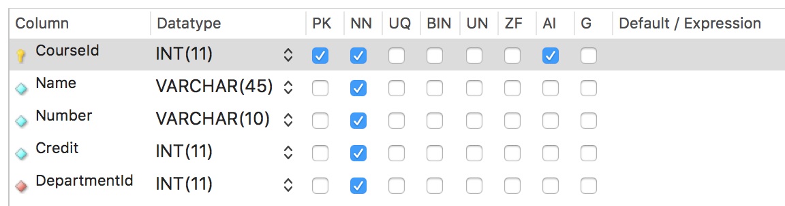
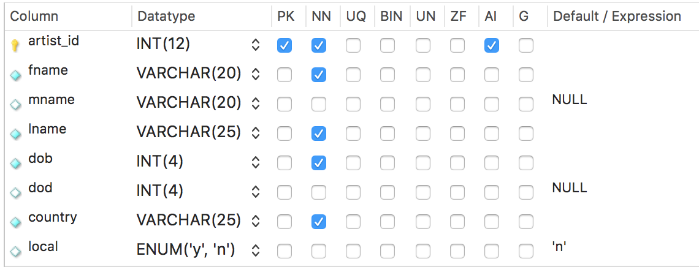

9 How Do We Enter and Edit Data?
INSERT Statement
The INSERT Statement Syntax:
INSERT INTO table_name (column_list) VALUES (value_list)
Let’s add some data to the course table. Here are the column definitions as shown in Workbench:
There are two different ways to add one or more rows of data to your tables with the INSERT statement.
The first way is without a column list. With this method, every column in the table must have a value and it must be entered in the proper column order as it was defined in the column definitions.
No Column List, One Row
INSERT INTO course VALUES
(1, 'Intro to Databases', '111', 3, 1);
No Column List, Multiple Rows
INSERT INTO course VALUES
(2, 'Economics', '388', 4, 2),
(3, 'Micro Economics', '150', 3, 2),
(4, 'Classical Heritage', '376', 2, 3);
The second way is with a column list. The columns in the list don’t have to be in any particular order, but the values must be in the same order as the columns are listed in the INSERT statement. Here we have left the same order of columns that is shown in the column definition image but we don’t have to keep that order.
Using a Column List, One Row
INSERT INTO course
(courseid, name, number, credit, departmentid)
VALUES
(1, 'Intro to Databases', '111', 3, 1);
Using a Column List, Multiple Rows
INSERT INTO course
(courseid, name, number, credit, departmentid)
VALUES
(2, 'Economics', '388', 4, 2),
(3, 'Micro Economics', '150', 3, 2),
(4, 'Classical Heritage', '376', 2, 3);
Let’s look at the artist table column definitions in Workbench:
Two columns in the Artist table have NULL as the default value if nothing is entered for that column. The local column in the artist table has a default value of ‘n’. That column tells us whether an artist is local or not. Most artists are not local, so the value of ‘n’ will be inserted into that column if no other value is placed there as data is entered for that row. Also notice that the artist_id is set up as auto-increment (AI).
We can insert data into this table in a few different ways.
We can use the keyword of DEFAULT instead of an actual integer for any auto-incremented field. And we can also use NULL to leave a data value null. Or DEFAULT to enter the default value.
INSERT INTO artist VALUES
(DEFAULT, 'Vincent', NULL, 'van Gogh', '1853', NULL, 'France', DEFAULT);
Since we already defined NULL in our column definitions for mname and dod, we could have also used DEFAULT for mname and dod instead of NULL.
Or this INSERT would do the same thing.
INSERT INTO artist
(fname, lname, dob, country)
VALUES
('Vincent', 'van Gogh', '1853', 'France');
Because we have an auto-increment for artist_id, it will be filled in automatically and mname, dod, and local will all get the default values filled in automatically from the column definitions.
You can also enter data into your tables in the table view in Workbench without using the SQL INSERT command. When you apply the data you’ve entered, it will create an INSERT statement for you to run. When entering a string or string literal this way, you don’t have to put quotes around the string value.
UPDATE Statement
The UPDATE Statement Syntax:
UPDATE table_name
SET column_name = expresson
WHERE search_condition
To modify or edit data that is already entered into a table, you can use the UPDATE statement.
If we wanted to change Vincent Van Gogh's first name to Vinny we could use this UPDATE statement.
UPDATE artist
SET fname = 'Vinny'
WHERE artist_id = 2;
DELETE Statement
The DELETE Statement Syntax:
DELETE FROM table_name
WHERE search_condition
To delete a row of a table we can use a DELETE statement.
If we wanted to delete the van Gogh row from our table, we could use this DELETE statement.
DELETE FROM artist
WHERE lname = 'van Gogh';
Don’t forget to always use a WHERE clause with UPDATE and DELETE. Otherwise, every row in the table will be UPDATED or DELETED. You might need to turn off the Safe Mode in Workbench by going to ‘Preferences’ – ‘SQL Editor’ and uncheck 'Safe Updates’ near the bottom of the preferences there. Remember there is no undo button once you run a UPDATE or DELETE statement.
The way we create our database this week, we will not need to use the CREATE command because Workbench does that for us in the forward engineering from our ERD to the database. We also should not need to use DROP to delete any of our tables or any of our databases. If you need to delete a table or database from Workbench because you made a mistake or want to start over, you can run a DROP statement but be careful not to drop something you don’t mean to. You can also right click the table or database name from your schema list in Workbench and drop them that way. Be very careful with the DROP command. There is no undo button.
Referential Integrity and Foreign Key Constraints
Referential Integrity implies that relationships among tables should be enforced. This guarantees that relationships between rows in two tables remain synchronized during all updates and deletes. When we create a database from our ERD diagram the foreign keys are by default mandatory. In other words, MySQL is enforcing the relationships between tables. This is referred to as Foreign Key Constraints. This constraint enforces the referential integrity by guaranteeing that changes cannot be made to data in the primary key table if those changes invalidate the link to data in the foreign key table.
This is important to know because, as we enter insert, update, and delete data in our tables, we cannot delete a row of data that has a foreign key associated with the primary key of that row in another table. We also cannot add a row to a table with a foreign key that does not already exist as a primary key of another table.
Also, if an attempt is made to insert a row into a table that uses a foreign key that doesn't exist as a primary key in another table, the action will fail. If an attempt is made to delete a row in a primary key table or to update a primary key value, the action will fail when the deleted or updated primary key value corresponds to a foreign key value of another table. All links to that primary key would have to be deleted first before you could delete or update that primary key.